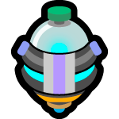

This page and my youtube will be mainly focused on beginner content, but will explore other content
My tools:
My youtube homepage/playlists:
Beginner playlists:
Other playlists:
So I spent a lot of time creating a document that fully explains a
majority of the game modes and other topics.
I hope this can be useful to someone out there.
I did not cover stuff such as leveling you monster or every corner of
the UI
Please also read #ms-guide, it covers leveling up and other topics.
There is no point for us to overlap on the same content
Short answer - get at least one lucy or masamune or anastasia. BUT, if you are willing to spend time re-rolling, get 2-3+ good units.
Long answer - MS unit evaluation and philosphy on how to pull banners is tricky and very subjective. Read more at link reroll

Gacha lab is new system for getting monthly pull that replaced the card
flips.
TLDR: idle game, click to collect energy, spend 300 energy to summon
unit, get 1 free unit per month.
Similar to idle clicker, click the screen to collect energy.
Energy generates over time and maxes out at 30/30 roughly every
9hours.
Gouzetsu points to raise cap to 40/40 (update v29.6).
On MSday you can collect 50 energy for each element.
Spend 300 energy of an element to summon a unit.
Can summon up to 10 units, pick 1 unit for free pull (12 summons if
monpass).
Has a mechanic that once you collect X amount of total cumulative
energy, you generate more (rare) energy.
This first starts after you collect 500 cumulative energy, and again at
1000, and again at 2000.
IE. if your cap is 40/40, then collect twice a day, morning and night,
for max efficiency. if cap 30/30 then collect 3 times a day, morning,
midday and night.
GW link
https://xn--eckwa2aa3a9c8j8bve9d.gamewith.jp/article/show/491334
My youtube:
My Youtube on gacha lab
Official site gacha lab:
https://www.monster-strike.com/news/20250327_3.html
Version 29.6:
https://xn--eckwa2aa3a9c8j8bve9d.gamewith.jp/article/show/511755
Gamer that mainly played RTS (WC, starcraft) and MOBA (dota, LoL)
Friend got me into NA version of MS, played until servers went EoS then
started Japan MS.
I have just over 1000 login days in Japan MS, if NA was included might
be over 1400.
I would call myself an average player. I maxlucked most gouzetsus (with
miraclemin help), can do 110/120 tenma, but i still die often, miss
shots, and use continue items. Right now, Reizetsus are above my skill
level.
I do not speak/read japanese at all, but have learned the game through
playing, reading GW, watching Scotts YT, discord, eng wiki, other YT
channels, etc..